Examples Gallery#
This gallery contains examples demonstrating the usage of mne-denoise.
Sensor Noise Suppression#
Examples of Sensor Noise Suppression on NumPy and MNE data, followed by deterministic demonstrations of the algorithm’s assumptions and diagnostics.
Reference-free BSS-CCA#
Examples of reference-free BSS-CCA muscle-artifact attenuation on NumPy and MNE data, followed by deterministic demonstrations of the algorithm’s assumptions, diagnostics, and failure modes.
Singular Spectrum Analysis#
Examples of additive Basic SSA, frequency-guided grouping, and Teixeira local SSA on deterministic synthetic signals.
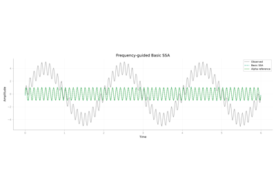
Basic SSA decomposition and frequency-guided cleaning
DSS Examples#
Overview#
Examples demonstrating Denoising Source Separation (DSS) across evoked, spectral, temporal, and blind-separation use cases.
Files#
plot_01_dss_fundamentals.py: Core DSS concepts with trial-average and bandpass biases.plot_02_artifact_correction.py: Blink and heartbeat correction with DSS.plot_03_evoked_responses.py: Evoked-response denoising and contrast-focused DSS.plot_04_spectral_dss.py: Frequency-specific component extraction on synthetic and real data.plot_05_periodic_dss.py: Periodic signal extraction for SSVEP and quasi-periodic structure.plot_06_temporal_dss.py: Time-shift and smoothness biases for temporally structured signals.plot_07_spectrogram_dss.py: Time-frequency masking with spectrogram-based DSS.plot_08_blind_source_separation.py: Blind source separation and FastICA equivalence.plot_09_custom_bias.py: Defining custom DSS biases.plot_11_wiener_masking.py: Adaptive Wiener masking for bursty signals.plot_12_joint_dss.py: Joint DSS for multi-dataset repeatability.plot_13_cardiac_composition.py: Explicit, held-out cardiac DSS composition with attenuation and preservation checks.
Data Requirements#
Synthetic sections run directly with no external data.
Examples using MNE datasets download and cache them through MNE when needed.
References#
Särelä & Valpola (2005). Denoising Source Separation. J. Mach. Learn. Res.
de Cheveigné & Simon (2008). Denoising based on spatial filtering. J. Neurosci. Methods.
de Cheveigné & Parra (2014). Joint decorrelation. NeuroImage.
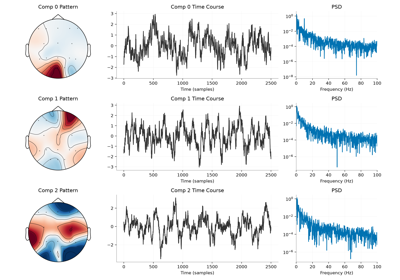
Periodic Signals (SSVEP and Quasi-Periodic).
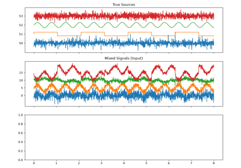
Blind Source Separation and ICA Equivalence.
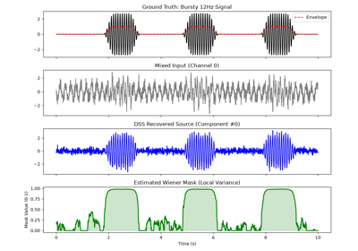
Adaptive Wiener Masking for Bursty Signals.
ZapLine Examples#
Overview#
Examples demonstrating ZapLine and ZapLine-plus for removing power-line artifacts from synthetic, epoched, continuous, and adaptive-cleaning scenarios.
Files#
plot_01_basic_usage.py: Basic ZapLine usage on synthetic line-noise data.plot_02_parameter_tuning.py: Parameter tuning and real NoiseTools MEG data.plot_03_epoched_data.py: Epoched ZapLine workflows and high-channel MEG data.plot_04_adaptive_mode.py: ZapLine-plus style adaptive cleaning on non-stationary data.plot_05_adaptive_advanced.py: Advanced harmonic and chunk-level adaptive outputs.
Data Requirements#
Synthetic sections run directly with no external data.
Examples using MNE datasets download and cache them through MNE when needed.
NoiseTools-backed examples download and cache the required .mat files into
examples/zapline/datathe first time they are run.
References#
de Cheveigné (2020). ZapLine: A simple and effective method to remove power line artifacts. NeuroImage.
Klug & Kloosterman (2022). Zapline-plus: A Zapline extension for automatic and adaptive removal of frequency-specific noise artifacts in M/EEG. Human Brain Mapping.
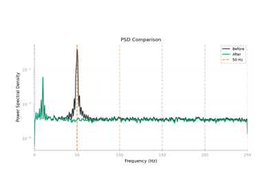
ZapLine: Epoched Data and Real Data Examples.
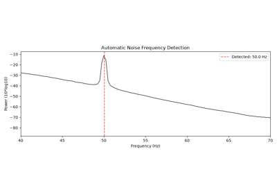
ZapLine-plus: Adaptive Cleaning on Non-Stationary Noise.
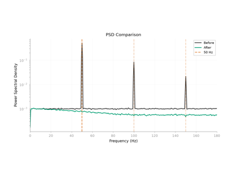
ZapLine-plus: Advanced Settings and Features.
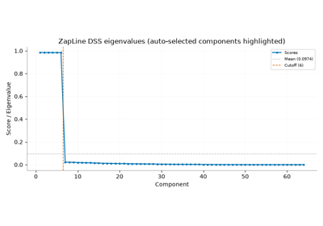
ZapLine on MEG-like data with many co-equal noise components.
ASR Examples#
Examples demonstrating Artifact Subspace Reconstruction (ASR) for burst-artifact repair in EEG (and MEG) data — from a basic clean to a full preprocessing pipeline, with each method example grounded in its source paper.
Getting started#
plot_01_asr_basics.py: Standard ASR on synthetic multichannel bursts.plot_02_mne_raw_qc.py: MNERawusage with repair annotations and an optional clean_windows-style final rejection mask.plot_05_asr_visualization.py: The ASR-specificmne_denoise.vizplots (repair timeline, component reconstruction, calibration fraction) alongside the generic before/after and PSD helpers.
Cutoff and variants#
plot_06_cutoff_tuning.py: Howcutofftrades data modified against variance removed (Chang 2020).plot_07_riemannian_asr.py: Riemannian (method="riemannian_windowed") vs standard ASR on real blinks (Blum 2019).plot_03_adaptive_asr.py: AASR-style streaming withfit/partial_fit/transform.plot_08_adaptive_variants.py: Adaptivepspvspswvsmwon non-stationary data, with the moving-window adaptation trajectory (Tsai).plot_04_juggler_asr.py: Juggler DBSCAN calibration on dense short bursts.plot_09_juggler_strategies.py: Jugglerdbscanvsgevreference selection under heavy contamination (Kim 2025).plot_10_choosing_a_variant.py: Standard vs Riemannian vs Juggler on one substrate, with a short recommendation.
I/O, QC, and pipelines#
plot_11_epochs_and_meg.py: ASR onmne.Epochsand on MEG magnetometers.plot_12_diagnostics_qc.py:get_diagnostics/variance_removed/to_annotationsand the three ASR diagnostic plots.plot_13_pipeline_filter_asr_ica.py: A realisticfilter -> ASR -> ICAworkflow on real EEG.
Experimental research prototypes#
plot_15_guided_asr.py: DSS-guided soft ASR (GuidedASR), demonstrated on synthetic data only.Warning
GuidedASRis an unpublished, unvalidated research prototype. Its current evidence is limited to unit tests and synthetic benchmarks. Do not treat it as a validated EEG preprocessing method, and independently verify signal preservation and artifact attenuation for your data.
Notes#
Most examples use synthetic data so they run without downloads; plot_07 and
plot_13 (and the MEG part of plot_11) use the MNE sample dataset.
Apply ASR to real EEG only after bad-channel handling, referencing, and
high-pass filtering in the surrounding MNE workflow.
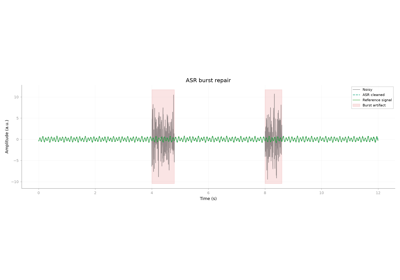
Artifact Subspace Reconstruction: Basic Usage.
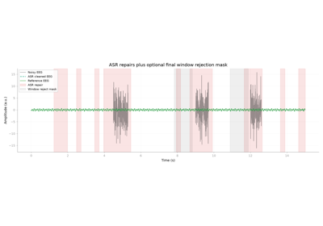
Artifact Subspace Reconstruction: Raw QC and Annotations.
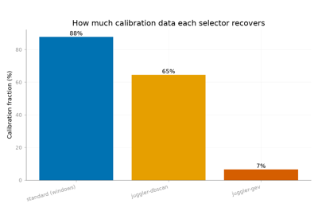
Juggler ASR: DBSCAN vs GEV reference selection.
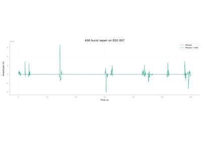
A realistic pipeline: filter, ASR, then ICA.
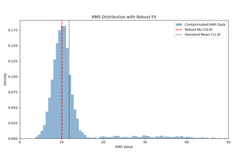
Quantifying Dataset Noise with RMS Statistics
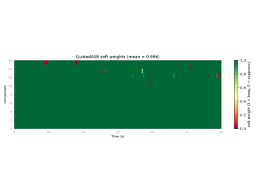
Guided ASR: preserving neural activity that ASR would over-clean.
Spectrum Interpolation Examples#
Overview#
Examples demonstrating spectrum-interpolation line-noise removal (Leske & Dalal, 2019). The power-line frequency and its harmonics are removed by interpolating the amplitude spectrum across a narrow band while preserving the phase, leaving broadband activity around the line frequency largely intact. The FFT-based method is best suited to continuous recordings or long segments; short epochs should be inspected for edge effects.
Files#
plot_01_spectrum_interpolation.py: Basic spectrum interpolation on synthetic data with 60 Hz line noise and harmonics.
Data Requirements#
The example runs directly on synthetic data with no external downloads.
References#
Leske, S., & Dalal, S. S. (2019). Reducing power line noise in EEG and MEG data via spectrum interpolation. NeuroImage, 189, 763-776.
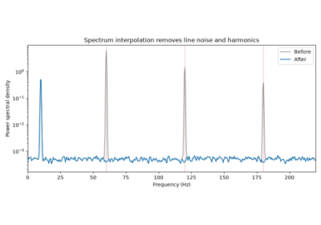
Spectrum Interpolation: Power-Line Noise Removal.
SOUND Examples#
Overview#
Examples demonstrating SOUND (Source-estimate-Utilizing Noise-discarding), which suppresses channel-specific noise by asking whether each sensor’s signal is consistent with what a forward model says the head could have produced.
Files#
plot_01_sound_basics.py: SOUND on synthetic EEG with deliberately corrupted sensors; recovering them, checking the intact channels are not damaged, and sweepinglambda_.
Data Requirements#
All sections run directly with no external data.
The lead field is built from the montage with a three-layer spherical head model, so no MRI or forward solution is needed.
References#
Mutanen, Metsomaa, Liljander & Ilmoniemi (2018). Automatic and robust noise suppression in EEG and MEG: The SOUND algorithm. NeuroImage.
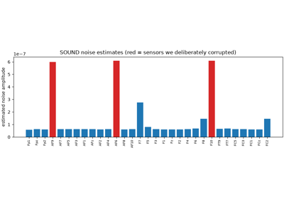
SOUND: Suppressing Channel-Specific Noise with a Forward Model
SSP-SIR Examples#
Overview#
Examples demonstrating SSP-SIR, which suppresses TMS-evoked muscle artifacts by projecting out the artifact subspace and reconstructing the brain signal lost to that projection through a forward model.
Files#
plot_01_sspsir_basics.py: SSP-SIR on a simulated TMS-evoked response buried under muscle bursts; readingn_componentsoff the singular-value elbow, why the projection is crossfaded rather than applied to the whole epoch, and inspecting the removed topographies viaprojs_.
Data Requirements#
All sections run directly with no external data.
The lead field is built from the montage with a three-layer spherical head model, so no MRI or forward solution is needed.
References#
Mutanen, Kukkonen, Nieminen, Stenroos, Sarvas & Ilmoniemi (2016). Recovering TMS-evoked EEG responses masked by muscle artifacts. NeuroImage.
Mutanen et al. (2024). A simulation study: comparing independent component analysis and signal-space projection - source-informed reconstruction for rejecting muscle artifacts evoked by transcranial magnetic stimulation. Frontiers in Human Neuroscience.
Mutanen et al. (2022). Source-based artifact-rejection techniques for TMS-EEG. Journal of Neuroscience Methods.
Hernandez-Pavon et al. (2022). Removing artifacts from TMS-evoked EEG: A methods review and a unifying theoretical framework. Journal of Neuroscience Methods.
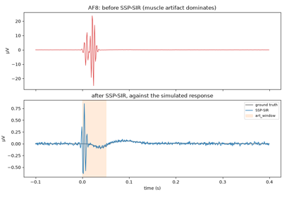
SSP-SIR: Recovering TMS-Evoked Responses Buried Under Muscle Artifacts